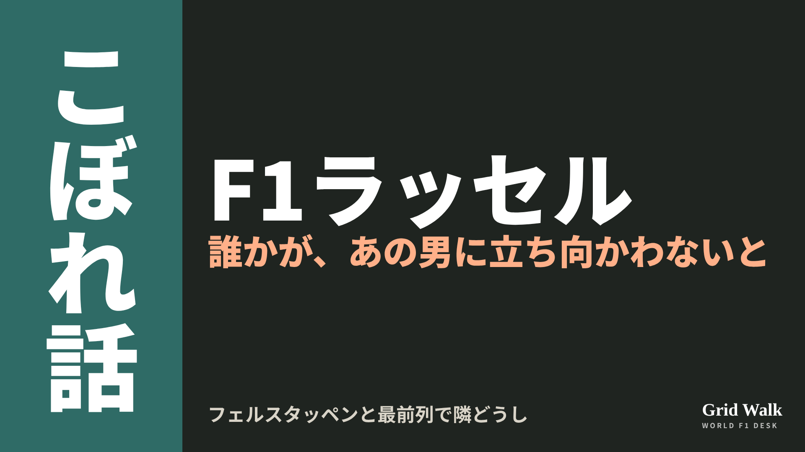
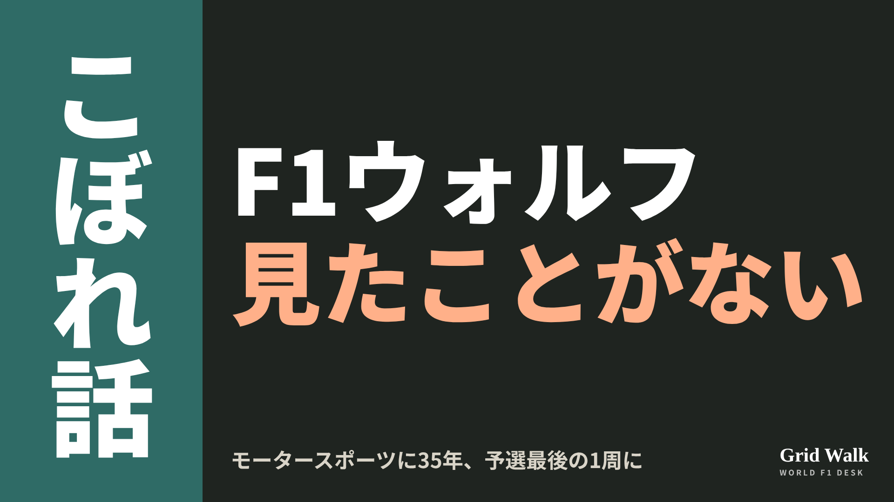
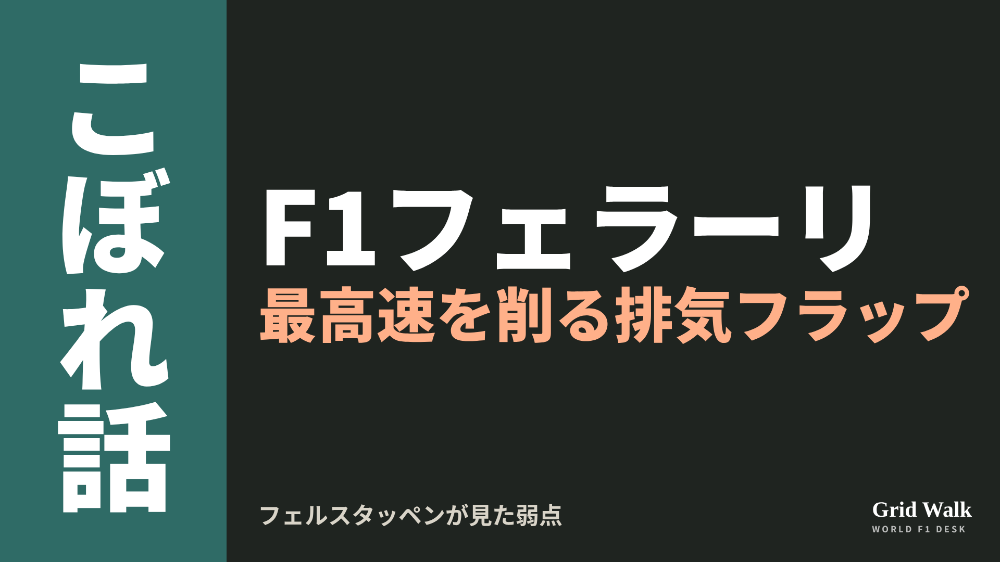
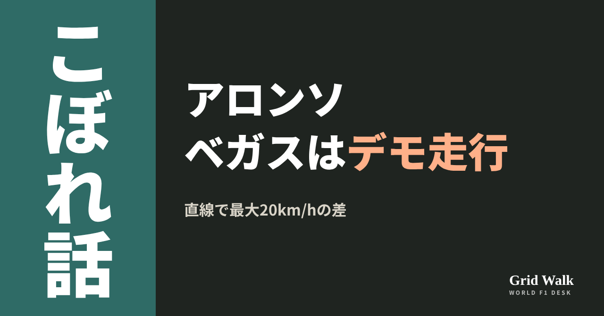
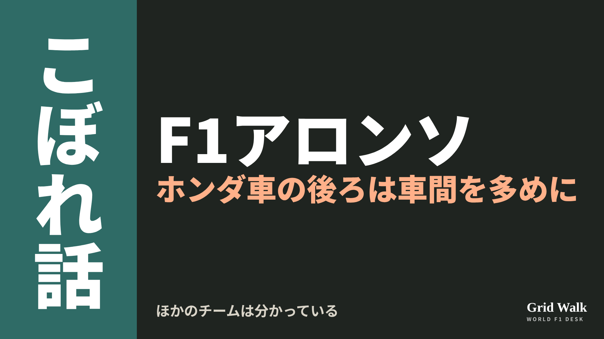
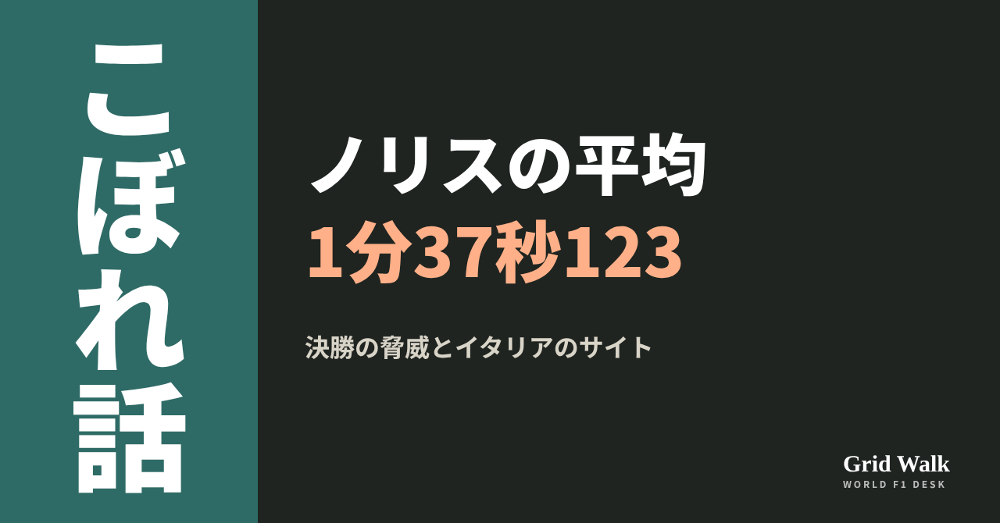
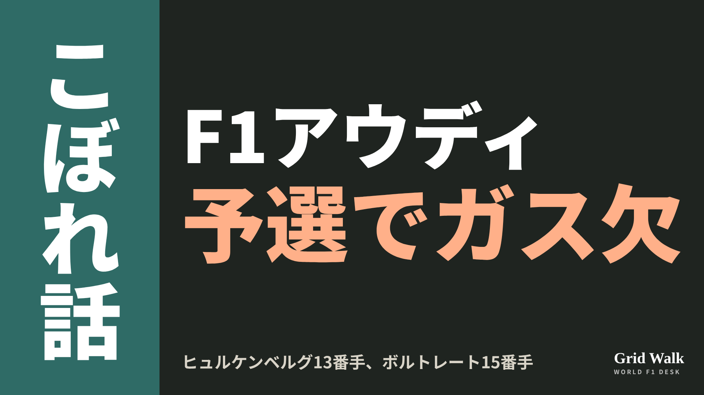
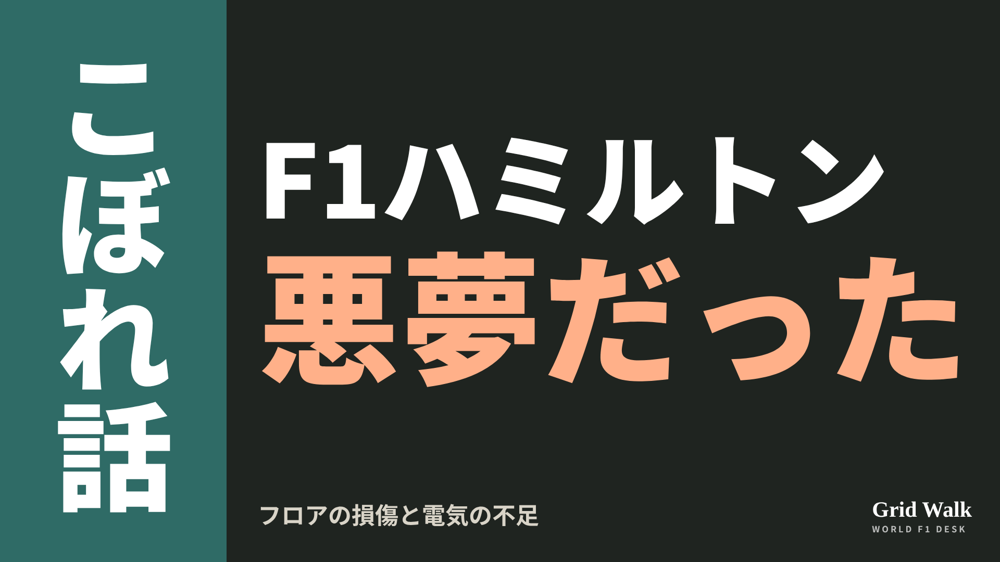

<meta charset="utf-8"><title>11/22決勝前のコラム note貼り付け</title>
<style>
/* one column of numbered paste steps; text steps vs image steps differ by marker */
:root{--bg:#F5F4F0;--card:#FFFFFF;--ink:#1D2321;--mute:#5F665F;--line:#DCDAD2;--btn:#1F5FBF;--btnok:#2E8B4F;--img:#E9F3EC;--imgink:#22663B;--sans:'IBM Plex Sans JP','Hiragino Sans','Noto Sans JP',sans-serif}
@media (prefers-color-scheme:dark){:root:not([data-theme="light"]){--bg:#171A19;--card:#202423;--ink:#ECEDE8;--mute:#A3AAA2;--line:#343937;--btn:#4D8BE6;--btnok:#3FA866;--img:#1E2C23;--imgink:#8FD3A6;color-scheme:dark}}
:root[data-theme="dark"]{--bg:#171A19;--card:#202423;--ink:#ECEDE8;--mute:#A3AAA2;--line:#343937;--btn:#4D8BE6;--btnok:#3FA866;--img:#1E2C23;--imgink:#8FD3A6;color-scheme:dark}
body{background:var(--bg);color:var(--ink);font-family:var(--sans);font-size:15px;line-height:1.75;padding:20px 16px 60px}
main{max-width:680px;margin:0 auto;display:grid;gap:28px}
header h1{font-size:22px;margin:0 0 6px;text-wrap:balance}
header p{margin:0;color:var(--mute);font-size:14px}
nav{display:flex;gap:8px;flex-wrap:wrap;margin-top:12px}
nav a{border:1px solid var(--line);border-radius:999px;padding:4px 14px;color:var(--ink);text-decoration:none;font-size:14px;background:var(--card)}
.part h2{font-size:18px;line-height:1.5;margin:0 0 12px;text-wrap:balance;display:flex;gap:10px;align-items:baseline;flex-wrap:wrap}
.tag{font-size:13px;background:var(--ink);color:var(--bg);border-radius:6px;padding:1px 9px}
.steps{list-style:none;margin:0;padding:0;display:grid;gap:12px}
.st{background:var(--card);border:1px solid var(--line);border-radius:12px;padding:12px;min-width:0}
.hd{display:flex;align-items:center;gap:8px;margin-bottom:8px}
.no{width:26px;height:26px;border-radius:50%;background:var(--btn);color:#fff;display:inline-flex;align-items:center;justify-content:center;font-size:13px;font-weight:700;flex:0 0 26px}
.im .no{background:var(--btnok)}
.hd em{font-style:normal;font-size:12px;background:var(--img);color:var(--imgink);border-radius:6px;padding:0 8px}
.bx{font-size:13.5px;line-height:1.7;border:1px solid var(--line);border-radius:8px;padding:8px 10px;max-height:110px;overflow:auto;overflow-wrap:anywhere}
.bx.tall{max-height:150px}.bx p{margin:0 0 6px}.bx h2{font-size:14px;margin:8px 0 4px}.bx a{color:var(--btn)}
.st img{display:block;width:100%;max-width:100%;border:1px solid var(--line);border-radius:8px}
.sub{font-size:12.5px;color:var(--mute);margin:6px 0 0}
.cp{width:100%;margin-top:8px;padding:12px;border:0;border-radius:10px;background:var(--btn);color:#fff;font:600 15px var(--sans);cursor:pointer}
.cp.ok{background:var(--btnok)}.cp.dl{background:var(--btnok)}.cp:focus-visible{outline:3px solid var(--ink);outline-offset:2px}
.xh{font-size:15px;margin:20px 0 10px}
.fb{font-size:13px;line-height:1.7;margin:8px 0 0;padding:8px 10px;border-radius:8px;background:var(--img);color:var(--imgink)}
.opts{display:grid;grid-template-columns:repeat(auto-fill,minmax(240px,1fr));gap:10px}
.opt{min-width:0}.opt img{display:block;width:100%;border:1px solid var(--line);border-radius:8px}
.ol{display:flex;align-items:center;gap:8px;margin-top:6px}.ol b{font-size:13px;flex:0 0 auto}.ol .on{font-size:12.5px;color:var(--mute);flex:1;min-width:0}.ol .cp{width:auto;flex:0 0 auto;padding:9px 14px}.ol .cp{margin:0;padding:9px}
.toast{font-size:13px;color:var(--mute);margin-top:6px}
</style>
<main><header><h1>11/22決勝前のコラム note貼り付け</h1><p>いま公開済みは8本です。青い番号は文章、緑は画像です。</p><nav><a href="#p1">1</a><a href="#p2">2</a><a href="#p3">3</a><a href="#p4">4</a><a href="#p5">5</a><a href="#p6">6</a><a href="#p7">7</a><a href="#p8">8</a></nav></header><section class="part" id="p1"><h2><span class="tag">OFF GRID</span>ラッセル「誰かが、あの男に立ち向かわないと」　最前列で隣どうし</h2><p class="sub">サイトに公開：11:52</p><ol class="steps">
<li class="st im"><div class="hd"><span class="no">1</span><b>見出し画像</b><em>画像</em></div><button class="cp dl" data-img="img/verstappen-russell-front-row-20261122.png" data-name="verstappen-russell-front-row-20261122_見出し画像.png">ダウンロード</button></li>
<li class="st"><div class="hd"><span class="no">2</span><b>タイトル</b></div><div class="bx" id="p1t">ラッセル「誰かが、あの男に立ち向かわないと」　最前列で隣どうし</div><button class="cp" data-plain="p1t">タイトルをコピー</button></li>
<li class="st"><div class="hd"><span class="no">3</span><b>本文</b></div><div class="bx tall" id="p1r"><p>第21戦ラスベガスGPの決勝で、最前列に並ぶ予定なのは、レッドブルのマックス・フェルスタッペンとメルセデスのジョージ・ラッセルです。前日のFP3で接触した2人です。予選のあと、ラッセルはSky Italiaの取材エリアで、フェルスタッペンへの不満をはっきり口にしました。イギリスのテレグラフが11月21日に伝えています。</p><p>FP3の裁定を説明したコラムと、元の記事の要約はサイトで → <a href="https://f1gridwalk.github.io/lens/verstappen-russell-front-row-20261122/?utm_source=note&amp;utm_campaign=verstappen-russell-front-row-20261122">https://f1gridwalk.github.io/lens/verstappen-russell-front-row-20261122/?utm_source=note&amp;utm_campaign=verstappen-russell-front-row-20261122</a></p><blockquote><p>「誰かが、あの男に立ち向かわないといけない」（ラッセル、Sky Italia、テレグラフ／イギリス）</p></blockquote><h2>警告には納得、それでも引かない</h2><p>FP3の件で、フェルスタッペンにはスチュワードから警告が出ました。経緯と裁定は、11月21日のコラム https://f1gridwalk.github.io/lens/verstappen-fp3-investigations-20261121/ で紹介しました。ラッセルは、裁定そのものには不満はないといいます。</p><blockquote><p>「警告で良かったと思う」「ラップを始めようとしている相手を抜いてはいけない、というルールはどこにもない」「でも、それをやれば、その相手をひどい目にあわせることになる」（ラッセル、Sky Italia、テレグラフ／イギリス）</p></blockquote><blockquote><p>「彼は毎週毎週、たくさんのドライバーにこれをやっている」「みんな受け入れているけど、僕はこんなふうにひどい目にあわされるのを受け入れるつもりはない」（ラッセル、Sky Italia、テレグラフ／イギリス）</p></blockquote><p>イタリアのMotorionlineは、ラッセルの言葉をこう伝えています。Motorionlineの記事の要約は https://f1gridwalk.github.io/news/it-motorionline-russell-verstappen-dito-medio/ にあります。</p><blockquote><p>「スチュワードにとっては面白いテーマだけど、判断は正しかったと思う。だから、それでいい」（ラッセル、Motorionline／イタリア）</p></blockquote><p>MotorionlineとドイツのF1-Insiderは、FP3でフェルスタッペンがラッセルに向けて中指を立てたとも伝えています。</p><h2>会見では、何も起きていない</h2><p>テレグラフによると、予選後のFIAの記者会見では、準備のための周回では順位を守り、邪魔をしたり抜いたりしないという、ドライバーどうしの紳士協定についても質問が出ました。ラッセルは「混乱はない。はっきりしていた」と答えています。</p><blockquote><p>「何も起きていない」（フェルスタッペン、FIAの記者会見、テレグラフ／イギリス）</p></blockquote><p>フェルスタッペンは、この話に時間を使いたくないとも話しています（テレグラフ）。</p><blockquote><p>「そんな協定は、生まれてから一度も見たことがない」（フェルスタッペン、テレグラフ／イギリス）</p></blockquote><h2>1コーナーは、どちらが先か</h2><p>F1-Insiderは、ドイツのSkyで解説を務めるティモ・グロックの見方を伝えています。記事の要約は https://f1gridwalk.github.io/news/de-f1insider-glock-verstappen-russell-startreihe/ にあります。</p><blockquote><p>「マックスが最初に1コーナーへ曲がっていくか、誰も曲がれないかのどちらかだ」（グロック、F1-Insider／ドイツ）</p></blockquote><p>同じ記事によると、メルセデスのトト・ウォルフ代表は、冗談まじりにこう話しました。</p><blockquote><p>「もしかしたら、お互いにはじき出し合うかもしれない。そうなったら、いい映画が見られる」（ウォルフ、F1-Insider／ドイツ）</p></blockquote><p>F1公式によると、ドライバーズ順位はフェルスタッペンが279点で2位、ラッセルが262点で3位、差は17点です。予選のタイムは、フェルスタッペンが1分34秒151、ラッセルが1分34秒224でした（F1公式）。</p><p>編集部としては、ラッセルが裁定には納得しながら、コースの上では引かないと口にした点が大事だと見ています。2位を争う2人が隣どうしでスタートするだけに、最初のブレーキングにも17点差の重さがかかりそうです。</p><p><strong>ラスベガスの1コーナー、先に曲がっていくのはフェルスタッペンとラッセルのどちらだと思いますか？</strong></p><p>━━━━━━━━━━</p><p><strong>F1 Grid Walk では、世界のF1ニュースを毎日日本語でまとめています。</strong></p><p>海外の記事の要約を、毎日載せています。</p><p><a href="https://f1gridwalk.github.io/">https://f1gridwalk.github.io/</a></p><p>ほかの海外記事も読みたい方は、F1 Grid Walkへ。</p><p><a href="https://f1gridwalk.github.io/lens/verstappen-russell-front-row-20261122/">https://f1gridwalk.github.io/lens/verstappen-russell-front-row-20261122/</a></p><p>━━━━━━━━━━</p><p><a href="https://sports.yahoo.com/articles/russell-accuses-verstappen-screwing-drivers-120920404.html">出典：テレグラフ（Yahoo Sports 掲載）（イギリス）</a></p><p><a href="https://f1grandprix.motorionline.com/russell-verstappen-las-vegas-pl3-reprimenda-fia/">出典：Motorionline（F1grandprix）（イタリア）</a></p><p><a href="https://f1-insider.com/formel-1-glock-warnung-verstappen-las-vegas-84091/">出典：F1-Insider（ドイツ）</a></p><p><a href="https://www.formula1.com/en/results/2026/drivers">出典：F1公式サイト（イギリス）</a></p><p><a href="https://www.formula1.com/en/racing/2026">出典：F1公式サイト（イギリス）</a></p></div><button class="cp" data-rich="p1r">本文をコピー</button></li>
<li class="st"><div class="hd"><span class="no">4</span><b>ハッシュタグ</b></div><div class="bx" id="p1h">#F1 #F1jp #フェルスタッペン #ラッセル #ウォルフ #ラスベガスGP #F1こぼれ話 #OFFGRID</div><button class="cp" data-plain="p1h">タグをコピー</button></li>
</ol><h3 class="xh">X</h3><ol class="steps">
<li class="st im"><div class="hd"><b>X用の画像</b><em>画像</em></div><button class="cp dl" data-img="img/x_verstappen-russell-front-row-20261122.png" data-name="x_verstappen-russell-front-row-20261122.png">ダウンロード</button></li>
<li class="st"><div class="hd"><b>① noteをシェアするときの文</b></div><div class="bx" id="p1x0">ラスベガスGPの決勝、最前列にはFP3で接触したフェルスタッペンとラッセルが並ぶ予定です。ラッセルは「誰かが、あの男に立ち向かわないといけない」。noteにまとめました #F1jp #ラスベガスGP #ラッセル</div><button class="cp" data-plain="p1x0">コピー</button></li>
<li class="st"><div class="hd"><b>② ①への返信</b></div><div class="bx" id="p1x1">ほかの海外記事も読みたい方は、F1 Grid Walkへ。
https://f1gridwalk.github.io/lens/verstappen-russell-front-row-20261122/?utm_source=x&amp;utm_campaign=verstappen-russell-front-row-20261122</div><button class="cp" data-plain="p1x1">コピー</button></li>
<li class="st"><div class="hd"><b>③ ②への返信</b></div><div class="bx" id="p1x2">毎日の海外F1ニュースは、日本語でこちらにまとめています。
https://f1gridwalk.github.io/</div><button class="cp" data-plain="p1x2">コピー</button></li>
</ol></section><section class="part" id="p2"><h2><span class="tag">OFF GRID</span>ウォルフ「見たことがない」　1.5秒後ろでも効いたスリップ</h2><p class="sub">サイトに公開：11:53</p><ol class="steps">
<li class="st im"><div class="hd"><span class="no">1</span><b>見出し画像</b><em>画像</em></div><button class="cp dl" data-img="img/wolff-tow-lap-never-seen-20261122.png" data-name="wolff-tow-lap-never-seen-20261122_見出し画像.png">ダウンロード</button></li>
<li class="st"><div class="hd"><span class="no">2</span><b>タイトル</b></div><div class="bx" id="p2t">ウォルフ「見たことがない」　1.5秒後ろでも効いたスリップ</div><button class="cp" data-plain="p2t">タイトルをコピー</button></li>
<li class="st"><div class="hd"><span class="no">3</span><b>本文</b></div><div class="bx tall" id="p2r"><p>第21戦ラスベガスGPの予選で、最速のタイムを出したのはアンドレア・キミ・アントネッリでした。その最後の1周に、メルセデスのトト・ウォルフ代表が驚いています。予選のあと、F1 TVの振り返りの番組でこう話しています。オランダのF1Maximaalが11月21日に伝えました。</p><p>ウォルフとアントネッリの発言を伝えた記事の要約と、スリップストリームの解説はサイトで → <a href="https://f1gridwalk.github.io/lens/wolff-tow-lap-never-seen-20261122/?utm_source=note&amp;utm_campaign=wolff-tow-lap-never-seen-20261122">https://f1gridwalk.github.io/lens/wolff-tow-lap-never-seen-20261122/?utm_source=note&amp;utm_campaign=wolff-tow-lap-never-seen-20261122</a></p><blockquote><p>「モータースポーツに35年いるが、1.5秒も離れて、列車のように連なって走っているときにスリップストリームが効くのは、見たことがない」（ウォルフ、F1 TV。F1Maximaal／オランダ）</p></blockquote><p>F1公式サイトによると、アントネッリのタイムは1分33秒893で、2番手のマックス・フェルスタッペン（レッドブル）、3番手のジョージ・ラッセル（メルセデス）を上回りました。ただ、エンジン部品を規定より多く使ったため5グリッド降格があり、スタートは6番手の予定です。F1Maximaalの記事の要約は https://f1gridwalk.github.io/news/nl-f1maximaal-wolff-never-seen-tow/ にあります。</p><h2>メルセデスは、後ろにつくのは損と見ていた</h2><p>ウォルフ代表は、ふつうなら逆だと言います。</p><blockquote><p>「普通はコーナーでひどく損をして、直線では取り戻せなくなる」「でも、どういうわけか、ここでは効くようだ」（ウォルフ、F1 TV。F1Maximaal／オランダ）</p></blockquote><p>アメリカのRACERによると、メルセデスは予選の途中でも、前の車について走るのはむしろ不利だという考えを繰り返していました。Q3が始まるとき、ブラッドリー・ロード副代表もF1 TVで同じ考えを話していたといいます。</p><blockquote><p>「僕たちは、ほかのチームより少し遅れてそれに気づいた。でも、どうやってこのタイムが出たのか、まったくわからない」（ウォルフ、F1 TV。F1Maximaal／オランダ）</p></blockquote><p>F1公式の結果では、3回目のフリー走行で最速だったのはラッセルで、2番手のアントネッリに0.911秒の差をつけていました。ウォルフ代表はSky Sports F1に、ラッセルは前の車から4秒離れた理想の位置にいたと話し、7〜9コーナーで何かあったと見て調べる考えを示しました（F1公式／イギリス）。</p><h2>間に合わないはずの1周を、本人が選んだ</h2><p>最後のアタックは、本人の判断でした。</p><blockquote><p>「いや、本人が自分で選んだ」「僕たちは、彼が時間内にラインを越えられなかったと思っていた」「僕の感覚では失った1周だった。でも、どういうわけか速い1周だった」（ウォルフ、F1Maximaal／オランダ）</p></blockquote><p>アントネッリ本人も、手応えのない予選だったと振り返っています。イタリアのMotorionlineによると、タイヤをうまく働かせられず、ブレーキペダルの踏みしろも長く、ブレーキングに苦しんだといいます。</p><blockquote><p>「僕にとっては、とても変な予選だった」「締め出されたと思った。でもここはスリップストリームがとても強くて、そのおかげでタイムを稼ぎ、車をポールの位置に置けた」（アントネッリ、Motorionline／イタリア）</p></blockquote><p>降格で、フロントローにはフェルスタッペンとラッセルが並ぶ予定です。降格後のスタート順は、11月21日のコラム https://f1gridwalk.github.io/lens/vegas-qualifying-verstappen-pole-20261121/ にまとめました。隣り合う2人についてのウォルフ代表の言葉は、同じ日のコラム https://f1gridwalk.github.io/lens/verstappen-russell-front-row-20261122/ で紹介しています。</p><p>編集部としては、6番手からのアントネッリがどこまで上がるかは、このスリップストリームの効き方しだいだと見ています。チームの代表自身が、なぜ効いたのかをまだつかめていないからです。スリップストリームの仕組みは https://f1gridwalk.github.io/deep/rules/slipstream/ にあります。</p><p><strong>1.5秒後ろでも効いたラスベガスのスリップストリーム。決勝でも、これが順位を大きく動かすと思いますか？</strong></p><p>━━━━━━━━━━</p><p><strong>F1 Grid Walk では、世界のF1ニュースを毎日日本語でまとめています。</strong></p><p>海外の記事の要約を、毎日載せています。</p><p><a href="https://f1gridwalk.github.io/">https://f1gridwalk.github.io/</a></p><p>ほかの海外記事も読みたい方は、F1 Grid Walkへ。</p><p><a href="https://f1gridwalk.github.io/lens/wolff-tow-lap-never-seen-20261122/">https://f1gridwalk.github.io/lens/wolff-tow-lap-never-seen-20261122/</a></p><p>━━━━━━━━━━</p><p><a href="https://www.f1maximaal.nl/formule-1/wolff-met-stomheid-geslagen-na-kwalificatie-in-35-jaar-nog-nooit-zoiets-gezien">出典：F1Maximaal（オランダ）</a></p><p><a href="https://www.formula1.com/en/latest/article/i-have-no-idea-how-these-lap-times-came-together-wolff-reflects-on-slipstream-impact-in-las-vegas-qualifying.5hGMtgEZODMntPSadcUJbO">出典：F1公式サイト（イギリス）</a></p><p><a href="https://f1grandprix.motorionline.com/f1-gp-las-vegas-antonelli-il-piu-veloce-ma-partira-6-per-me-sono-state-qualifiche-molto-strane/">出典：Motorionline（F1GrandPrix）（イタリア）</a></p><p><a href="https://racer.com/2026/11/21/mercedes-misses-the-cues-but-heads-the-queue-in-vegas">出典：RACER（アメリカ）</a></p><p><a href="https://www.formula1.com/en/results/2026/races/1300/las-vegas/starting-grid">出典：F1公式サイト（イギリス）</a></p><p><a href="https://www.formula1.com/en/results/2026/races/1300/las-vegas/practice/3">出典：F1公式サイト（イギリス）</a></p><p><a href="https://www.formula1.com/en/racing/2026">出典：F1公式サイト（イギリス）</a></p></div><button class="cp" data-rich="p2r">本文をコピー</button></li>
<li class="st"><div class="hd"><span class="no">4</span><b>ハッシュタグ</b></div><div class="bx" id="p2h">#F1 #F1jp #メルセデス #ウォルフ #アントネッリ #ラスベガスGP #予選 #スリップストリーム #F1こぼれ話 #OFFGRID</div><button class="cp" data-plain="p2h">タグをコピー</button></li>
</ol><h3 class="xh">X</h3><ol class="steps">
<li class="st im"><div class="hd"><b>X用の画像</b><em>画像</em></div><button class="cp dl" data-img="img/x_wolff-tow-lap-never-seen-20261122.png" data-name="x_wolff-tow-lap-never-seen-20261122.png">ダウンロード</button></li>
<li class="st"><div class="hd"><b>① noteをシェアするときの文</b></div><div class="bx" id="p2x0">アントネッリの予選最後の1周に、メルセデスのウォルフ代表が驚いています。1.5秒も後ろでスリップストリームが効くのは、35年で見たことがないそうです。noteにまとめました #F1jp #アントネッリ #メルセデス</div><button class="cp" data-plain="p2x0">コピー</button></li>
<li class="st"><div class="hd"><b>② ①への返信</b></div><div class="bx" id="p2x1">ほかの海外記事も読みたい方は、F1 Grid Walkへ。
https://f1gridwalk.github.io/lens/wolff-tow-lap-never-seen-20261122/?utm_source=x&amp;utm_campaign=wolff-tow-lap-never-seen-20261122</div><button class="cp" data-plain="p2x1">コピー</button></li>
<li class="st"><div class="hd"><b>③ ②への返信</b></div><div class="bx" id="p2x2">毎日の海外F1ニュースは、日本語でこちらにまとめています。
https://f1gridwalk.github.io/</div><button class="cp" data-plain="p2x2">コピー</button></li>
</ol></section><section class="part" id="p3"><h2><span class="tag">OFF GRID</span>ルクレール「今は非常に怒っている」　フェラーリ2台そろってQ2敗退</h2><p class="sub">サイトに公開：11:54</p><ol class="steps">
<li class="st im"><div class="hd"><span class="no">1</span><b>見出し画像</b><em>画像</em></div><button class="cp dl" data-img="img/leclerc-angry-ferrari-q2-20261122.png" data-name="leclerc-angry-ferrari-q2-20261122_見出し画像.png">ダウンロード</button></li>
<li class="st"><div class="hd"><span class="no">2</span><b>タイトル</b></div><div class="bx" id="p3t">ルクレール「今は非常に怒っている」　フェラーリ2台そろってQ2敗退</div><button class="cp" data-plain="p3t">タイトルをコピー</button></li>
<li class="st"><div class="hd"><span class="no">3</span><b>本文</b></div><div class="bx tall" id="p3r"><p>ラスベガスGPの予選で、フェラーリはシャルル・ルクレールが11番手、ルイス・ハミルトンが12番手でした。2台そろってのQ2敗退です。ドイツのMotorsport-Totalによると、Q3進出もありうると考えていたルクレールは、悔しさを隠しませんでした。</p><p>元の記事へのリンクと、ハミルトンのフロアの損傷の要約はサイトで → <a href="https://f1gridwalk.github.io/lens/leclerc-angry-ferrari-q2-20261122/?utm_source=note&amp;utm_campaign=leclerc-angry-ferrari-q2-20261122">https://f1gridwalk.github.io/lens/leclerc-angry-ferrari-q2-20261122/?utm_source=note&amp;utm_campaign=leclerc-angry-ferrari-q2-20261122</a></p><blockquote><p>「今は非常に怒っている。だから、あまり多くは言わないでおきたい」（ルクレール、Motorsport-Total／ドイツ）</p></blockquote><p>イギリスのCrash.netによると、この言葉はSky Sports F1に話したものです。ルクレールは、実質ただ一度のアタックの周回で自分がミスをしたことも認めました。サイトの要約は https://f1gridwalk.github.io/news/de-motorsporttotal-leclerc-angry-q2/ にあります。</p><blockquote><p>「でも、僕たちはいい仕事をしなかった」（ルクレール、Motorsport-Total／ドイツ）</p></blockquote><h2>ミラーを見ながらのアタック</h2><p>ただ記事は、不満は自分のミスだけでなく、チームの連携と連絡にも向いていると書きます。</p><blockquote><p>「ミラーを見ることが増えて、周りの車の流れを自分で判断しようとしていた」（ルクレール、Motorsport-Total／ドイツ）</p></blockquote><p>この日の朝には、GPSの問題もあったといいます。</p><blockquote><p>「今日の原因が何だったのかはわからない。今朝、GPSでたくさん問題があったのは知っている。もしそれが今日の問題だったなら、理解はできる」（ルクレール、Motorsport-Total／ドイツ）</p></blockquote><h2>スリップストリームより、タイヤの温度</h2><p>長い直線では、前の車の後ろにつくスリップストリームが大きな助けになります。それでも2台は、これを合わせませんでした。記事によると、タイヤの温度を優先したためです。</p><blockquote><p>「タイヤがすべてだと考えていたから、その話はしなかった」「タイヤの温度を保つことが、僕たちにはいちばん大事だった。それが僕たちの弱点だとわかっている」（ルクレール、Motorsport-Total／ドイツ）</p></blockquote><p>原因がチームの側にあるなら、ルクレールは批判を受け止めるといいます。</p><blockquote><p>「こういう大事な場面でこそ、僕たちはそこにいなければならない。でも、いなかった」（ルクレール、Motorsport-Total／ドイツ）</p></blockquote><h2>バスール代表は言い訳にしない</h2><p>イタリアのMotorionlineによると、フレデリック・バスール代表はこう話しました。</p><blockquote><p>「Q1では3番手だった。ポールを争うペースはなかったが、少なくともQ3に進んで、ずっとしっかりした仕事をするペースはあった」（バスール、Motorionline／イタリア）</p></blockquote><p>イタリアのSkyでタイヤを温める難しさを聞かれると、暖かいほうが熱を入れやすいのはこのクルマの特徴だとしたうえで、こう続けました。</p><blockquote><p>「言い訳ではない。クルマの力を引き出すために、もっといい仕事をしなければならない」（バスール、Motorionline／イタリア）</p></blockquote><p>ルクレールのいらだちについては、こう答えました。</p><blockquote><p>「予選の直後のいらだちはわかる。ドラマではない」（バスール、Motorionline／イタリア）</p></blockquote><p>Q1でフロアを傷めたハミルトンの話は、サイトの要約 https://f1gridwalk.github.io/news/it-motorionline-hamilton-incubo-fondo/ で。Crash.netによると、ピアストリの降格で、2台は10番手と11番手からスタートする予定です。F1公式の順位では、フェラーリはコンストラクターズ2位で、3位レッドブルとの差は95点です。</p><p>編集部としては、ルクレールの怒りは、直線の遅さそのものより、ありうると見ていたQ3を、チームの手順も絡んで逃したことに向いていると見ています。バスールも、Q3に届くペースはあったと話しています。</p><p><strong>フェラーリの2台がQ3に届かなかったいちばんの理由は、直線の遅さ、タイヤの温度、チームの連携のどれだと思いますか？</strong></p><p>━━━━━━━━━━</p><p><strong>F1 Grid Walk では、世界のF1ニュースを毎日日本語でまとめています。</strong></p><p>海外の記事の要約を、毎日載せています。</p><p><a href="https://f1gridwalk.github.io/">https://f1gridwalk.github.io/</a></p><p>ほかの海外記事も読みたい方は、F1 Grid Walkへ。</p><p><a href="https://f1gridwalk.github.io/lens/leclerc-angry-ferrari-q2-20261122/">https://f1gridwalk.github.io/lens/leclerc-angry-ferrari-q2-20261122/</a></p><p>━━━━━━━━━━</p><p><a href="https://www.motorsport-total.com/formel-1/news/leclerc-schimpft-nach-doppeltem-q2-aus-bin-im-moment-sehr-wuetend-26112109">出典：Motorsport-Total（ドイツ）</a></p><p><a href="https://f1grandprix.motorionline.com/ferrari-las-vegas-vasseur-qualifiche-motore-gomme-q2/">出典：Motorionline（イタリア）</a></p><p><a href="https://www.crash.net/f1/news/1110522/1/charles-leclerc-very-angry-ferraris-biggest-weakness-exposed-worst-qualifying-f1">出典：Crash.net（イギリス）</a></p><p><a href="https://www.formula1.com/en/results/2026/team">出典：F1公式サイト（イギリス）</a></p></div><button class="cp" data-rich="p3r">本文をコピー</button></li>
<li class="st"><div class="hd"><span class="no">4</span><b>ハッシュタグ</b></div><div class="bx" id="p3h">#F1 #F1jp #フェラーリ #ルクレール #ハミルトン #バスール #ラスベガスGP #予選 #F1こぼれ話 #OFFGRID</div><button class="cp" data-plain="p3h">タグをコピー</button></li>
</ol><h3 class="xh">X</h3><ol class="steps">
<li class="st im"><div class="hd"><b>X用の画像</b><em>画像</em></div><button class="cp dl" data-img="img/x_leclerc-angry-ferrari-q2-20261122.png" data-name="x_leclerc-angry-ferrari-q2-20261122.png">ダウンロード</button></li>
<li class="st"><div class="hd"><b>① noteをシェアするときの文</b></div><div class="bx" id="p3x0">ラスベガスGPの予選で、フェラーリは2台そろってQ2敗退。ルクレールは「今は非常に怒っている」。自分のミスを認めつつ、チームの手順にも不満を口にしました。noteにまとめました #F1jp #ルクレール #フェラーリ</div><button class="cp" data-plain="p3x0">コピー</button></li>
<li class="st"><div class="hd"><b>② ①への返信</b></div><div class="bx" id="p3x1">ほかの海外記事も読みたい方は、F1 Grid Walkへ。
https://f1gridwalk.github.io/lens/leclerc-angry-ferrari-q2-20261122/?utm_source=x&amp;utm_campaign=leclerc-angry-ferrari-q2-20261122</div><button class="cp" data-plain="p3x1">コピー</button></li>
<li class="st"><div class="hd"><b>③ ②への返信</b></div><div class="bx" id="p3x2">毎日の海外F1ニュースは、日本語でこちらにまとめています。
https://f1gridwalk.github.io/</div><button class="cp" data-plain="p3x2">コピー</button></li>
</ol></section><section class="part" id="p4"><h2><span class="tag">OFF GRID</span>フェラーリの直線、遅さの一因は排気フラップ　フェルスタッペンの見方</h2><p class="sub">サイトに公開：11:55</p><ol class="steps">
<li class="st im"><div class="hd"><span class="no">1</span><b>見出し画像</b><em>画像</em></div><button class="cp dl" data-img="img/verstappen-ferrari-exhaust-flap-20261122.png" data-name="verstappen-ferrari-exhaust-flap-20261122_見出し画像.png">ダウンロード</button></li>
<li class="st"><div class="hd"><span class="no">2</span><b>タイトル</b></div><div class="bx" id="p4t">フェラーリの直線、遅さの一因は排気フラップ　フェルスタッペンの見方</div><button class="cp" data-plain="p4t">タイトルをコピー</button></li>
<li class="st"><div class="hd"><span class="no">3</span><b>本文</b></div><div class="bx tall" id="p4r"><p>第21戦ラスベガスGPの予選で、フェラーリはシャルル・ルクレールが11番手、ルイス・ハミルトンが12番手に終わり、2台ともQ2で姿を消しました（F1公式）。その理由の一つを、予選2番手だったレッドブルのマックス・フェルスタッペンが語っています。Motorsport.comの取材に答えた言葉を、ドイツのMotorsport-Total.comが11月21日に伝えました。</p><p>元の記事へのリンクと、ターボや排気管の用語解説はサイトで → <a href="https://f1gridwalk.github.io/lens/verstappen-ferrari-exhaust-flap-20261122/?utm_source=note&amp;utm_campaign=verstappen-ferrari-exhaust-flap-20261122">https://f1gridwalk.github.io/lens/verstappen-ferrari-exhaust-flap-20261122/?utm_source=note&amp;utm_campaign=verstappen-ferrari-exhaust-flap-20261122</a></p><blockquote><p>「彼らは明らかに最高速で不利だ。ただ、それは排気フラップをどう作ったかにも関係している」「ハースを見れば、直線での問題はずっと小さい」（フェルスタッペン、Motorsport.com。Motorsport-Total／ドイツが伝えた）</p></blockquote><h2>小さなターボと、排気口の前の部品</h2><p>Motorsport-Totalの記事は、フェラーリの最高速の足りなさを二つの面から説明しています。一つ目はパワーユニットです。フェラーリはほかの多くのメーカーより小さなターボを使っていて、シーズンの初めはスタートで得をしましたが、そのぶんエンジンそのものの力を失っているといいます。FIAの計測では、フェラーリの内燃エンジン（ICE）は、いちばん良いレッドブルより2〜4%劣り、出遅れたメーカーへの救済の枠を二つ受けた、と記事は書いています。ターボは https://f1gridwalk.github.io/deep/rules/turbo/ 、救済の仕組みは https://f1gridwalk.github.io/deep/rules/aduo/ で。</p><p>ラスベガスの長い直線では、途中で電気が足りなくなり、しばらくは内燃エンジンだけで走ることになる、と記事は説明します。クリッピングは https://f1gridwalk.github.io/deep/rules/clipping/ で。</p><p>二つ目が排気フラップです。記事によると、フェラーリが今年、中心になって進めた考え方で、排気口の前に置く部品がダウンフォースを増やす一方、長い直線では足かせになりえます。フェルスタッペンは、その損得をこう説明しました。</p><blockquote><p>「いつも、どれだけダウンフォースが欲しいか、との組み合わせなんだ」「排気の前の部品を大きくすればするほど、出力を失う。だから、ある程度は自分たち次第だ」（同）</p></blockquote><blockquote><p>「こういうコースでは、それが本当に大きな不利になりうる。だから、そこは少し合わせる必要があるのかもしれない。でも、もちろんそれは彼ら自身で見つけないといけない！」（同）</p></blockquote><p>サイトの用語辞典 https://f1gridwalk.github.io/deep/rules/exhaust/ によると、FIAは2027年から、この排気口まわりの形を禁止します。</p><h2>スリップストリームの使い方には口を出さない</h2><p>Motorsport-Totalは、ラスベガスではスリップストリームの効果がとても大きかったのに、フェラーリの2人は予選の大半を、前の車の後ろにつかずに走ったと書き、最高速で劣るチームとしては意外なやり方だったと見ています。2台が合わせなかった理由をルクレールがどう話したかは、サイトの要約 https://f1gridwalk.github.io/news/de-motorsporttotal-leclerc-angry-q2/ で。この点についてフェルスタッペンは、話を自分のチームに戻しました。</p><blockquote><p>「まあ、外から判断するのは簡単だ。僕は自分たちのチームに集中しているだけだ」（フェルスタッペン、Motorsport-Total／ドイツ）</p></blockquote><p>レッドブルは、電気をあまり使わないコースでの効率を、シーズンを通して大きく上げてきた、と記事は伝えています。フェルスタッペンは、アンドレア・キミ・アントネッリの5グリッド降格で、ポールポジションから出る予定です（F1公式）。</p><p>編集部としては、この指摘の要は、ターボの大きさというエンジンの事情と、排気フラップの大きさというチームが自分で選べるものを、分けて見せた点にあると見ています。ラスベガスの直線は、その選び方が試される場所です。</p><p><strong>コーナーのためのダウンフォースか、直線の最高速か。あなたがフェラーリのエンジニアなら、ラスベガスではどちらを優先しますか？</strong></p><p>━━━━━━━━━━</p><p><strong>F1 Grid Walk では、世界のF1ニュースを毎日日本語でまとめています。</strong></p><p>海外の記事の要約を、毎日載せています。</p><p><a href="https://f1gridwalk.github.io/">https://f1gridwalk.github.io/</a></p><p>ほかの海外記事も読みたい方は、F1 Grid Walkへ。</p><p><a href="https://f1gridwalk.github.io/lens/verstappen-ferrari-exhaust-flap-20261122/">https://f1gridwalk.github.io/lens/verstappen-ferrari-exhaust-flap-20261122/</a></p><p>━━━━━━━━━━</p><p><a href="https://www.motorsport-total.com/formel-1/news/verstappen-deckt-ferraris-schwachstelle-auf-ein-detail-kostet-topspeed-26112115">出典：Motorsport-Total.com（ドイツ）</a></p><p><a href="https://www.formula1.com/en/results/2026/races/1300/las-vegas/starting-grid">出典：F1公式サイト（イギリス）</a></p></div><button class="cp" data-rich="p4r">本文をコピー</button></li>
<li class="st"><div class="hd"><span class="no">4</span><b>ハッシュタグ</b></div><div class="bx" id="p4h">#F1 #F1jp #フェラーリ #フェルスタッペン #レッドブル #ラスベガスGP #排気フラップ #F1こぼれ話 #OFFGRID</div><button class="cp" data-plain="p4h">タグをコピー</button></li>
</ol><h3 class="xh">X</h3><ol class="steps">
<li class="st im"><div class="hd"><b>X用の画像</b><em>画像</em></div><button class="cp dl" data-img="img/x_verstappen-ferrari-exhaust-flap-20261122.png" data-name="x_verstappen-ferrari-exhaust-flap-20261122.png">ダウンロード</button></li>
<li class="st"><div class="hd"><b>① noteをシェアするときの文</b></div><div class="bx" id="p4x0">フェラーリの直線の遅さについて、フェルスタッペンは小さなターボだけでなく、排気フラップの作り方も響いていると見ています。ある程度はフェラーリ自身が選べることだといいます。noteにまとめました #F1jp #フェルスタッペン #フェラーリ</div><button class="cp" data-plain="p4x0">コピー</button></li>
<li class="st"><div class="hd"><b>② ①への返信</b></div><div class="bx" id="p4x1">ほかの海外記事も読みたい方は、F1 Grid Walkへ。
https://f1gridwalk.github.io/lens/verstappen-ferrari-exhaust-flap-20261122/?utm_source=x&amp;utm_campaign=verstappen-ferrari-exhaust-flap-20261122</div><button class="cp" data-plain="p4x1">コピー</button></li>
<li class="st"><div class="hd"><b>③ ②への返信</b></div><div class="bx" id="p4x2">毎日の海外F1ニュースは、日本語でこちらにまとめています。
https://f1gridwalk.github.io/</div><button class="cp" data-plain="p4x2">コピー</button></li>
</ol></section><section class="part" id="p5"><h2><span class="tag">OFF GRID</span>アロンソ「ほかのチームは分かっている」　ホンダ車の後ろは車間を多めに</h2><p class="sub">サイトに公開：11:56</p><ol class="steps">
<li class="st im"><div class="hd"><span class="no">1</span><b>見出し画像</b><em>画像</em></div><button class="cp dl" data-img="img/alonso-honda-demo-lap-20261122.png" data-name="alonso-honda-demo-lap-20261122_見出し画像.png">ダウンロード</button></li>
<li class="st"><div class="hd"><span class="no">2</span><b>タイトル</b></div><div class="bx" id="p5t">アロンソ「ほかのチームは分かっている」　ホンダ車の後ろは車間を多めに</div><button class="cp" data-plain="p5t">タイトルをコピー</button></li>
<li class="st"><div class="hd"><span class="no">3</span><b>本文</b></div><div class="bx tall" id="p5r"><p>ラスベガスGPの予選は、スリップストリーム（前の車の真後ろで空気抵抗が減る効果）の使い方が大きな話題になりました。ドイツのMotorsport-Totalは、メルセデスのアンドレア・キミ・アントネッリがレーシングブルズのアービッド・リンドブラッドの助けを借りて最速タイムを出した一方で、この駆け引きに加われなかったのはアストンマーティンだけだったと書いています。用語はルール辞典の https://f1gridwalk.github.io/deep/rules/slipstream/ で。</p><p>元の記事へのリンクと、ストロールの会見やアロンソのカレンダー批判を紹介したコラムへの案内はサイトで → <a href="https://f1gridwalk.github.io/lens/alonso-honda-demo-lap-20261122/?utm_source=note&amp;utm_campaign=alonso-honda-demo-lap-20261122">https://f1gridwalk.github.io/lens/alonso-honda-demo-lap-20261122/?utm_source=note&amp;utm_campaign=alonso-honda-demo-lap-20261122</a></p><p>ホンダの発表によると、アストンマーティンはフェルナンド・アロンソが19番手、ランス・ストロールが20番手で、2台ともQ2に進めませんでした。イギリスのRacingNews365によると、予選のあと記者に囲まれたアロンソは、直線の遅れを話したあと、安全面の心配を聞かれました。アロンソは心配があることを認め、こう続けたといいます。Motorsport-Totalは、笑みを浮かべながらの言葉だったと書いています。</p><blockquote><p>「でも、ほかのチームは分かっている。ホンダのエンジンを積んだ車の後ろを走るときは、はじめから車間を多めに取るんだ」（アロンソ、Motorsport-Total／ドイツ）</p></blockquote><h2>直線で最大20km/hの差</h2><p>コースについては、こう話しています。</p><blockquote><p>「モンツァとベガスは、直線が長いぶん、僕たちにはいちばん悪いコースだ」（アロンソ、Motorsport-Total／ドイツ）</p></blockquote><p>Motorsport-Totalがデータで比べたところ、直線ではアストンマーティンがメルセデスより最大20km/h遅かったといいます。ただ同サイトは、ターン5からターン9までの曲がりくねった区間でも、アロンソがQ1トップのメルセデスのジョージ・ラッセルに0.5秒近く負けていたと書いています。RacingNews365によると、アロンソはカルロス・サインツの降格で18番手からスタートする予定です。</p><h2>同じ車ではないレース</h2><p>ラスベガスの週末をどう感じているかと聞かれると、アロンソの答えはこうでした（RacingNews365）。</p><blockquote><p>「いいところだよ。でも同じ車じゃないから、本当の競争でもレースでもない。僕たちにとってはデモ走行なんだ」（アロンソ、RacingNews365／イギリス）</p></blockquote><p>ホンダも、厳しさは承知のうえでした。</p><blockquote><p>「予選そのものは、私たちのパッケージには厳しいものでした。でも、今の仕様では難しくなると分かっていました」（折原伸太郎、ホンダ公式）</p></blockquote><p>ストロールも、週末の前の記者会見で直線だけで2秒くらい負けそうだと話していました（11月20日のコラム https://f1gridwalk.github.io/lens/stroll-underpowered-20261120/ ）。予選のあとにアロンソが口にしたカレンダーへの不満は、11月22日のコラム https://f1gridwalk.github.io/lens/alonso-calendar-no-sense-20261122/ で紹介しています。サイトの要約は https://f1gridwalk.github.io/news/de-motorsporttotal-alonso-honda-demo-lap/ にあります。</p><p>編集部としては、冗談めかした言い方でも、速さの差が安全の話にまでつながっている点が大事だと見ています。一方で、曲がりくねった区間でも0.5秒近く負けていたというデータは、課題が直線だけではない可能性も示しています。F1公式によると、アストンマーティンはコンストラクターズ10位の7点で、9位のウィリアムズとは5点差です。決勝では、速さの違う車どうしの直線での並び方にも目が向きそうです。</p><p><strong>ホンダの車の後ろでは車間を多めに取る。アロンソのこの言葉、冗談と本音のどちらに聞こえましたか？</strong></p><p>━━━━━━━━━━</p><p><strong>F1 Grid Walk では、世界のF1ニュースを毎日日本語でまとめています。</strong></p><p>海外の記事の要約を、毎日載せています。</p><p><a href="https://f1gridwalk.github.io/">https://f1gridwalk.github.io/</a></p><p>ほかの海外記事も読みたい方は、F1 Grid Walkへ。</p><p><a href="https://f1gridwalk.github.io/lens/alonso-honda-demo-lap-20261122/">https://f1gridwalk.github.io/lens/alonso-honda-demo-lap-20261122/</a></p><p>━━━━━━━━━━</p><p><a href="https://www.motorsport-total.com/formel-1/news/fernando-alonso-bei-einem-honda-motor-nehmen-alle-anderen-sicherheitsabstand-26112110">出典：Motorsport-Total.com（ドイツ）</a></p><p><a href="https://racingnews365.com/fernando-alonso-addresses-potential-honda-safety-concern-in-las-vegas">出典：RacingNews365（イギリス）</a></p><p><a href="https://honda.racing/f1/post/f1-2026-rd21-qualifying">出典：Honda Racing（日本）</a></p><p><a href="https://www.formula1.com/en/results/2026/team">出典：F1公式サイト（イギリス）</a></p></div><button class="cp" data-rich="p5r">本文をコピー</button></li>
<li class="st"><div class="hd"><span class="no">4</span><b>ハッシュタグ</b></div><div class="bx" id="p5h">#F1 #F1jp #アロンソ #アストンマーティン #ホンダ #ラスベガスGP #スリップストリーム #F1こぼれ話 #OFFGRID</div><button class="cp" data-plain="p5h">タグをコピー</button></li>
</ol><h3 class="xh">X</h3><ol class="steps">
<li class="st im"><div class="hd"><b>X用の画像</b><em>画像</em></div><button class="cp dl" data-img="img/x_alonso-honda-demo-lap-20261122.png" data-name="x_alonso-honda-demo-lap-20261122.png">ダウンロード</button></li>
<li class="st"><div class="hd"><b>① noteをシェアするときの文</b></div><div class="bx" id="p5x0">予選19番手のアロンソが、安全について聞かれ「ほかのチームは分かっている」。ホンダ車の後ろでは車間を多めに取るといいます。ラスベガスは「デモ走行」とも。noteにまとめました #F1jp #アロンソ #ホンダ</div><button class="cp" data-plain="p5x0">コピー</button></li>
<li class="st"><div class="hd"><b>② ①への返信</b></div><div class="bx" id="p5x1">ほかの海外記事も読みたい方は、F1 Grid Walkへ。
https://f1gridwalk.github.io/lens/alonso-honda-demo-lap-20261122/?utm_source=x&amp;utm_campaign=alonso-honda-demo-lap-20261122</div><button class="cp" data-plain="p5x1">コピー</button></li>
<li class="st"><div class="hd"><b>③ ②への返信</b></div><div class="bx" id="p5x2">毎日の海外F1ニュースは、日本語でこちらにまとめています。
https://f1gridwalk.github.io/</div><button class="cp" data-plain="p5x2">コピー</button></li>
</ol></section><section class="part" id="p6"><h2><span class="tag">OFF GRID</span>ノリスのFP3平均1分37秒123　伊サイトは決勝の脅威と分析</h2><p class="sub">サイトに公開：11:57</p><ol class="steps">
<li class="st im"><div class="hd"><span class="no">1</span><b>見出し画像</b><em>画像</em></div><button class="cp dl" data-img="img/vegas-race-pace-norris-20261122.png" data-name="vegas-race-pace-norris-20261122_見出し画像.png">ダウンロード</button></li>
<li class="st"><div class="hd"><span class="no">2</span><b>タイトル</b></div><div class="bx" id="p6t">ノリスのFP3平均1分37秒123　伊サイトは決勝の脅威と分析</div><button class="cp" data-plain="p6t">タイトルをコピー</button></li>
<li class="st"><div class="hd"><span class="no">3</span><b>本文</b></div><div class="bx tall" id="p6r"><p>決勝でフェルスタッペンがいちばん警戒すべき相手は誰か。イタリアのFormula1.itは、3回目のフリー走行（FP3）のタイムを読み、マクラーレンのランド・ノリスだと見ています。根拠は、ソフトタイヤでのレースペースの平均、1分37秒123です。マルコ・サッサラ記者が11月21日に書きました。</p><p>元の記事へのリンクと、タイヤの用語の解説はサイトで → <a href="https://f1gridwalk.github.io/lens/vegas-race-pace-norris-20261122/?utm_source=note&amp;utm_campaign=vegas-race-pace-norris-20261122">https://f1gridwalk.github.io/lens/vegas-race-pace-norris-20261122/?utm_source=note&amp;utm_campaign=vegas-race-pace-norris-20261122</a></p><p>第21戦ラスベガスGPは、現地木曜のFP1とFP2が雨にたたられました（FP1はコラム https://f1gridwalk.github.io/lens/vegas-fp1-rain-no-times-20261121/ で）。Formula1.itによると、路面が乾いたのは、F1公式の日程で現地金曜16時30分からのFP3です。決勝は日本時間22日13時スタートです。サイトの要約は https://f1gridwalk.github.io/news/it-formula1it-fp3-passo-gara-norris-ferrari/ にあります。</p><h2>読みにくかったFP3</h2><p>Formula1.itによると、FP3はまだゴムがのっていない路面で、各車の燃料の量もまちまちでした。誰が重い状態で誰が速い1周を狙っているのか見分けにくかったといいます。</p><p>F1公式の結果では、FP3の最速はメルセデスのジョージ・ラッセルで1分34秒041。ノリスは0.974秒差の3番手、レッドブルのマックス・フェルスタッペンは1.309秒差の6番手でした。</p><p>Formula1.itは、フェルスタッペンは難しいセッションで決勝のペースの手がかりを見せなかったが、ポールから出る以上、ノリスに挑めるはずだと書いています。ノリスはおそらくライバルより燃料が軽かったものの、最初のスティントで、コースにも路面にも慣れないうちに出したタイムであることも考えるべきだ、と書いています。ラッセルもとても競争力があり、いいペースだとしています（用語は https://f1gridwalk.github.io/deep/rules/race-pace/ で）。</p><h2>鍵はタイヤの温度</h2><p>同サイトは、タイヤの劣化は目立たず、グレイニングも大きな問題にはならなさそうだと見ています。差を生むのはタイヤの扱いで、作動温度域を外れると命取りになりかねず、気をつけるべきは温度だけだと書きます（用語は https://f1gridwalk.github.io/deep/rules/operating-window/ と https://f1gridwalk.github.io/deep/rules/graining/ で）。レッドブルのローレン・メキース代表も、予選のあとF1公式サイトにこう話しました。</p><blockquote><p>「この寒さの中では特に、タイヤを正しい作動温度域に入れることが鍵になる」（メキース、F1公式サイト）</p></blockquote><h2>フェラーリには長いレースか</h2><p>Formula1.itがいちばん心配しているのはフェラーリです。2台のSF-26はいちばん多く燃料を積んでいた可能性があり、遅いタイムはそのせいかもしれない。ただ予選の苦戦から、スティントの初めにタイヤを温められない問題も否定できない、と書いています。フェラーリは2台ともQ2で敗退し、F1公式のスタート順のページでは、シャルル・ルクレールが10番手、ルイス・ハミルトンが11番手の予定です。同サイトは、寒い中を後方から出るフェラーリには長いレースになると見ています。車の弱点はコラム https://f1gridwalk.github.io/lens/ferrari-vegas-double-trap-20261121/ で。</p><p>一方、マクラーレンのアンドレア・ステラ代表は慎重です。</p><blockquote><p>「明日のレースはとても予想しにくい。きのうの雨で、長い距離でのペースを試す機会がほとんどなかったこともある」（ステラ、F1公式サイト）</p></blockquote><p>ステラによると、新しいフロアはノリスの車にだけ付けられました（フロアの話はコラム https://f1gridwalk.github.io/lens/mclaren-new-floor-which-car-20261121/ で）。ノリス本人も、自分たちの直線の速さでは追い抜きは難しいと見ています。</p><blockquote><p>「予想はしない。今ある車でできることに集中する」（ノリス、F1公式サイト）</p></blockquote><p>編集部としては、ノリスの1分37秒123は大事な手がかりですが、決勝の順位をそのまま示す数字ではないと見ています。Formula1.it自身が燃料の軽さに触れていて、ステラも長い距離のペースは試せていないと話しているからです。</p><p><strong>3番手から出るノリスは、前に並ぶフェルスタッペンとラッセルに挑めると思いますか？</strong></p><p>━━━━━━━━━━</p><p><strong>F1 Grid Walk では、世界のF1ニュースを毎日日本語でまとめています。</strong></p><p>海外の記事の要約を、毎日載せています。</p><p><a href="https://f1gridwalk.github.io/">https://f1gridwalk.github.io/</a></p><p>ほかの海外記事も読みたい方は、F1 Grid Walkへ。</p><p><a href="https://f1gridwalk.github.io/lens/vegas-race-pace-norris-20261122/">https://f1gridwalk.github.io/lens/vegas-race-pace-norris-20261122/</a></p><p>━━━━━━━━━━</p><p><a href="https://www.formula1.it/news/34126/1/gp-las-vegas-analisi-passo-gara-fp3-norris-fa-paura-e-la-ferrari-ha-gia-i-brividi">出典：Formula1.it（イタリア）</a></p><p><a href="https://www.formula1.com/en/latest/article/what-the-teams-said-qualifying-in-las-vegas-2026.3nVBux5Arj5K1MNogvg9j9">出典：F1公式サイト（イギリス）</a></p><p><a href="https://www.formula1.com/en/results/2026/races/1300/las-vegas/practice/3">出典：F1公式サイト（イギリス）</a></p><p><a href="https://www.formula1.com/en/results/2026/races/1300/las-vegas/starting-grid">出典：F1公式サイト（イギリス）</a></p><p><a href="https://www.formula1.com/en/racing/2026/las-vegas">出典：F1公式サイト（イギリス）</a></p><p><a href="https://www.formula1.com/en/racing/2026">出典：F1公式サイト（イギリス）</a></p></div><button class="cp" data-rich="p6r">本文をコピー</button></li>
<li class="st"><div class="hd"><span class="no">4</span><b>ハッシュタグ</b></div><div class="bx" id="p6h">#F1 #F1jp #ラスベガスGP #ノリス #マクラーレン #フェラーリ #レースペース #F1こぼれ話 #OFFGRID</div><button class="cp" data-plain="p6h">タグをコピー</button></li>
</ol><h3 class="xh">X</h3><ol class="steps">
<li class="st im"><div class="hd"><b>X用の画像</b><em>画像</em></div><button class="cp dl" data-img="img/x_vegas-race-pace-norris-20261122.png" data-name="x_vegas-race-pace-norris-20261122.png">ダウンロード</button></li>
<li class="st"><div class="hd"><b>① noteをシェアするときの文</b></div><div class="bx" id="p6x0">乾いた路面での練習走行はFP3だけ。伊Formula1.itは、そこでのタイムからノリスのレースペースが決勝の脅威になると分析しました。フェラーリにはタイヤの温度の不安があるといいます。noteにまとめました #F1jp #ノリス #ラスベガスGP</div><button class="cp" data-plain="p6x0">コピー</button></li>
<li class="st"><div class="hd"><b>② ①への返信</b></div><div class="bx" id="p6x1">ほかの海外記事も読みたい方は、F1 Grid Walkへ。
https://f1gridwalk.github.io/lens/vegas-race-pace-norris-20261122/?utm_source=x&amp;utm_campaign=vegas-race-pace-norris-20261122</div><button class="cp" data-plain="p6x1">コピー</button></li>
<li class="st"><div class="hd"><b>③ ②への返信</b></div><div class="bx" id="p6x2">毎日の海外F1ニュースは、日本語でこちらにまとめています。
https://f1gridwalk.github.io/</div><button class="cp" data-plain="p6x2">コピー</button></li>
</ol></section><section class="part" id="p7"><h2><span class="tag">OFF GRID</span>アウディ、予選で燃料切れ　ヒュルケンベルグ「時間はあったけど」</h2><p class="sub">サイトに公開：11:58</p><ol class="steps">
<li class="st im"><div class="hd"><span class="no">1</span><b>見出し画像</b><em>画像</em></div><button class="cp dl" data-img="img/audi-fuel-qualifying-20261122.png" data-name="audi-fuel-qualifying-20261122_見出し画像.png">ダウンロード</button></li>
<li class="st"><div class="hd"><span class="no">2</span><b>タイトル</b></div><div class="bx" id="p7t">アウディ、予選で燃料切れ　ヒュルケンベルグ「時間はあったけど」</div><button class="cp" data-plain="p7t">タイトルをコピー</button></li>
<li class="st"><div class="hd"><span class="no">3</span><b>本文</b></div><div class="bx tall" id="p7r"><p>第21戦ラスベガスGPの予選で、アウディの2台はそろってQ2で姿を消しました。ニコ・ヒュルケンベルグは13番手、ガブリエル・ボルトレートは15番手です。ドイツのF1-Insider.comは11月21日、最後のアタックの時間に、2台とももう一度速く走るだけの燃料が残っていなかったと伝えています。</p><p>アウディの予選を伝えたドイツ各紙の記事へのリンクと、ラスベガスのスタート順の話はサイトで → <a href="https://f1gridwalk.github.io/lens/audi-fuel-qualifying-20261122/?utm_source=note&amp;utm_campaign=audi-fuel-qualifying-20261122">https://f1gridwalk.github.io/lens/audi-fuel-qualifying-20261122/?utm_source=note&amp;utm_campaign=audi-fuel-qualifying-20261122</a></p><p>F1公式のスタート順では、ほかのドライバーの降格で、2人は12番手と13番手から決勝に臨む予定です。サイトの要約は https://f1gridwalk.github.io/news/de-motorsportmagazin-audi-fuel-q2/ にあります。</p><h2>2回分の燃料と、早めに出たライバル</h2><p>F1-Insider.comによると、アウディはほかのチームがもっと遅くコースに出ると見て、Q2では速い周回2回分の燃料しか用意していませんでした。ところがライバルは早めに走り出し、アウディも後を追うしかありませんでした。高速のラスベガスでは、前の車の後ろで空気の抵抗を減らすスリップストリームが、コンマ数秒を生むからです。3回目のアタックの燃料は残りませんでした。</p><blockquote><p>「ほかのチームは違うやり方をしてきて、僕たちはスリップストリームをもらうために、ついていくしかなかった」（ヒュルケンベルグ、F1-Insider.com／ドイツ）</p></blockquote><p>ドイツのMotorsport-Total.comによると、ヒュルケンベルグはオーストリアのORFにこう話しています。</p><blockquote><p>「時間はあったけど、もっと周回するための燃料がもうなかった」（ヒュルケンベルグ、ORF／オーストリア、Motorsport-Total.comより）</p></blockquote><p>同サイトは、アウディはパワーユニットの力が足りず、スリップストリームに頼るしかなかったと書いています。その効き目について、本人はこう話しました。</p><blockquote><p>「ここではその効果がとても大きい」「0.3〜0.5秒くらいだと思う」（ヒュルケンベルグ、Motorsport-Total.com／ドイツ）</p></blockquote><h2>燃料より、足りなかった速さ</h2><p>それでもヒュルケンベルグは、燃料切れがQ2敗退のいちばんの理由ではなかったと話しています（Motorsport-Total.com）。F1-Insider.comによると、Q2で出した1分35秒460で、一時はトップ10に入っていました。</p><blockquote><p>「結局のところ、全体として、僕たちはちょっと遅すぎるんだ」（ヒュルケンベルグ、Motorsport-Total.com／ドイツ）</p></blockquote><p>ボルトレートの悩みは別でした。F1-Insider.comによると、直線、とくにコースの最初の区間で大きく時間を失い、ヒュルケンベルグより時速10km以上遅いこともありました。予選の前にギアボックスを替えても良くならなかったといいます。</p><blockquote><p>「3回目のフリー走行から直線で問題に苦しんでいて、それが予選でも続いた」「何が問題なのか、正確には分かっていない」（ボルトレート、F1-Insider.com／ドイツ）</p></blockquote><h2>7位のハースまで3点</h2><p>アウディの公式サイトで、レーシングディレクターのアラン・マクニッシュはこう話しています。</p><blockquote><p>「12番手と13番手からなら、明日は入賞圏まで戦って上がる現実的なチャンスがあると思う」（マクニッシュ、アウディF1公式／ドイツ）</p></blockquote><p>F1公式によると、アウディはコンストラクターズ8位で28点。7位のハース（31点）とは3点差で、今季はラスベガスを入れて残り3戦です。</p><p>編集部としては、燃料の計算違いより、ほかのチームに合わせなければスリップストリームをもらえない立場のほうが、アウディには重いと見ています。決勝でも、前の車にどれだけついていけるかが入賞の分かれ目になりそうです。</p><p><strong>12番手と13番手から決勝に臨むアウディ。あなたは、入賞できると思いますか？</strong></p><p>━━━━━━━━━━</p><p><strong>F1 Grid Walk では、世界のF1ニュースを毎日日本語でまとめています。</strong></p><p>海外の記事の要約を、毎日載せています。</p><p><a href="https://f1gridwalk.github.io/">https://f1gridwalk.github.io/</a></p><p>ほかの海外記事も読みたい方は、F1 Grid Walkへ。</p><p><a href="https://f1gridwalk.github.io/lens/audi-fuel-qualifying-20261122/">https://f1gridwalk.github.io/lens/audi-fuel-qualifying-20261122/</a></p><p>━━━━━━━━━━</p><p><a href="https://f1-insider.com/formel-1-kurioser-grund-audi-las-vegas-quali-84109/">出典：F1-Insider.com（ドイツ）</a></p><p><a href="https://www.motorsport-total.com/formel-1/news/audi-in-vegas-nicht-auf-q3-niveau-nico-huelkenberg-haette-gern-mehr-zeit-gehabt-26112114">出典：Motorsport-Total.com（ドイツ）</a></p><p><a href="https://www.audif1.com/de/races/2026/las-vegas-grand-prix">出典：アウディF1公式（ドイツ）</a></p><p><a href="https://www.formula1.com/en/results/2026/races/1300/las-vegas/starting-grid">出典：F1公式サイト（イギリス）</a></p><p><a href="https://www.formula1.com/en/results/2026/team">出典：F1公式サイト（イギリス）</a></p><p><a href="https://www.formula1.com/en/racing/2026">出典：F1公式サイト（イギリス）</a></p></div><button class="cp" data-rich="p7r">本文をコピー</button></li>
<li class="st"><div class="hd"><span class="no">4</span><b>ハッシュタグ</b></div><div class="bx" id="p7h">#F1 #F1jp #アウディ #ヒュルケンベルグ #ボルトレート #ラスベガスGP #スリップストリーム #F1こぼれ話 #OFFGRID</div><button class="cp" data-plain="p7h">タグをコピー</button></li>
</ol><h3 class="xh">X</h3><ol class="steps">
<li class="st im"><div class="hd"><b>X用の画像</b><em>画像</em></div><button class="cp dl" data-img="img/x_audi-fuel-qualifying-20261122.png" data-name="x_audi-fuel-qualifying-20261122.png">ダウンロード</button></li>
<li class="st"><div class="hd"><b>① noteをシェアするときの文</b></div><div class="bx" id="p7x0">ラスベガスGPの予選で、アウディの2台はQ2の最後に燃料が尽きました。用意したのは速い周回2回分。ヒュルケンベルグは「時間はあったけど」。noteにまとめました #F1jp #アウディ #ヒュルケンベルグ</div><button class="cp" data-plain="p7x0">コピー</button></li>
<li class="st"><div class="hd"><b>② ①への返信</b></div><div class="bx" id="p7x1">ほかの海外記事も読みたい方は、F1 Grid Walkへ。
https://f1gridwalk.github.io/lens/audi-fuel-qualifying-20261122/?utm_source=x&amp;utm_campaign=audi-fuel-qualifying-20261122</div><button class="cp" data-plain="p7x1">コピー</button></li>
<li class="st"><div class="hd"><b>③ ②への返信</b></div><div class="bx" id="p7x2">毎日の海外F1ニュースは、日本語でこちらにまとめています。
https://f1gridwalk.github.io/</div><button class="cp" data-plain="p7x2">コピー</button></li>
</ol></section><section class="part" id="p8"><h2><span class="tag">OFF GRID</span>ハミルトン「悪夢だった」　フロアの損傷と電気の不足が重なりQ2敗退</h2><p class="sub">サイトに公開：11:59</p><ol class="steps">
<li class="st im"><div class="hd"><span class="no">1</span><b>見出し画像</b><em>画像</em></div><button class="cp dl" data-img="img/hamilton-nightmare-floor-20261122.png" data-name="hamilton-nightmare-floor-20261122_見出し画像.png">ダウンロード</button></li>
<li class="st"><div class="hd"><span class="no">2</span><b>タイトル</b></div><div class="bx" id="p8t">ハミルトン「悪夢だった」　フロアの損傷と電気の不足が重なりQ2敗退</div><button class="cp" data-plain="p8t">タイトルをコピー</button></li>
<li class="st"><div class="hd"><span class="no">3</span><b>本文</b></div><div class="bx tall" id="p8r"><p>ラスベガスGPの予選で、フェラーリのルイス・ハミルトンはQ2で敗退し、12番手に終わりました。本人は「ああ、悪夢だった」と振り返り、フロアの損傷と、最後の周の電気の問題で、合わせて1秒近くを失ったと話しています。イタリアのMotorionlineが11月21日に伝えました。</p><p>ハミルトンの言葉を伝えた各紙の記事へのリンクはサイトで → <a href="https://f1gridwalk.github.io/lens/hamilton-nightmare-floor-20261122/?utm_source=note&amp;utm_campaign=hamilton-nightmare-floor-20261122">https://f1gridwalk.github.io/lens/hamilton-nightmare-floor-20261122/?utm_source=note&amp;utm_campaign=hamilton-nightmare-floor-20261122</a></p><h2>フロアで0.4秒、電気で0.6秒</h2><p>Motorionlineによると、ハミルトンは問題の始まりをこう説明しました。</p><blockquote><p>「最初の周に問題が起きた。破片だったのか、ほかの何かなのかはわからないが、フロアの後ろの部分を傷めた」「ダウンフォースだけで、0.3〜0.4秒を失った」（ハミルトン、Motorionline／イタリア）</p></blockquote><p>フロアは車の底を覆う板で、車を路面に押しつける力を生む要の部分です（https://f1gridwalk.github.io/deep/rules/floor-diffuser/ ）。ハミルトンは、車がかなり滑り、グリップを得るのに苦労したとも話しています。Motorionlineによると、フレデリック・バスール代表も、Q1でフロアを傷め、Q2までに直しきれなかったと認めています。</p><p>そこに重なったのが、最後のアタックの周の問題です。</p><blockquote><p>「その問題で約0.4秒、それからディプロイメントでさらに0.6秒を失った。悪いことが重なった」（ハミルトン、Motorionline／イタリア）</p></blockquote><p>ディプロイメントは、電池にためた電気を後輪を押す力として出すことです（https://f1gridwalk.github.io/deep/rules/deployment/ ）。前を走る車がいなかったことも理想的ではなかった、とハミルトンは付け加えています。</p><h2>英語の記事では、少し違う言い回し</h2><p>英語の記事では、ハミルトンは予選のあと、同じ話を少し違う言葉で語っています。イギリスのGrandPrix247が伝えた言葉は、Motorionlineとほぼ同じ流れです。</p><blockquote><p>「ああ、悪夢だった。グリップがとにかく低くて、タイヤが働いていないようだった」（ハミルトン、GrandPrix247／イギリス）</p></blockquote><p>F1公式サイトも、ハミルトンが予選を悪夢と表した約1分の動画を載せています。一方、イギリスのCrash.netの記事では、フロアで失ったタイムは0.3〜0.4秒ではなく「数テンス」（0.数秒）とされ、電気についてはこう話しています。</p><blockquote><p>「最後はディプロイメントが足りなくて、それだけで0.6秒くらい失った」「悪いことは重なるもので、今日はそういう日だった」（ハミルトン、Crash.net／イギリス）</p></blockquote><p>Crash.netによると、Q3まではあと0.167秒でした。ハミルトンは、二つの損がなければQ3に入れたと思うが、それでも厳しかっただろう、とも話しています。</p><h2>11番手からの決勝</h2><p>F1公式のスタート順のページでは、オスカー・ピアストリの10グリッド降格で、ハミルトンは11番手、チームメイトのシャルル・ルクレールは10番手からスタートする予定です。ルクレールの予選のあとの言葉は、サイトの要約 https://f1gridwalk.github.io/news/de-motorsporttotal-leclerc-angry-q2/ にあります。</p><p>Motorionlineによると、ハミルトンは、ここで少し苦しむことはわかっていたが、予想より少し苦しかったと認め、「顔を上げていなければならない」と続けました。F1公式のドライバーズ順位では、ハミルトンは261点で4位、3位のジョージ・ラッセルとは1点差です。</p><p>編集部としては、ハミルトンが挙げた損の多くが、フロアと電気という、予選の中で起きた問題だった点に目が行くと見ています。本人の見積もりどおりなら、0.167秒の差はこの二つで埋まっていたことになります。決勝でこれらが出なければ、ペースは11番手より前にあるのかもしれません。</p><p><strong>フロアの損傷と、最後の周の電気の不足。ハミルトンの予選により大きく響いたのは、どちらだと思いますか？</strong></p><p>━━━━━━━━━━</p><p><strong>F1 Grid Walk では、世界のF1ニュースを毎日日本語でまとめています。</strong></p><p>海外の記事の要約を、毎日載せています。</p><p><a href="https://f1gridwalk.github.io/">https://f1gridwalk.github.io/</a></p><p>ほかの海外記事も読みたい方は、F1 Grid Walkへ。</p><p><a href="https://f1gridwalk.github.io/lens/hamilton-nightmare-floor-20261122/">https://f1gridwalk.github.io/lens/hamilton-nightmare-floor-20261122/</a></p><p>━━━━━━━━━━</p><p><a href="https://f1grandprix.motorionline.com/hamilton-las-vegas-qualifiche-fondo-danneggiato-deployment/">出典：Motorionline（イタリア）</a></p><p><a href="https://www.grandprix247.com/grand-prix-f1-weekend-news/ferrari-las-vegas-qualifying-nightmare-for-lewis-hamilton-while-charles-leclerc-feels-hopeless">出典：GrandPrix247（イギリス）</a></p><p><a href="https://www.crash.net/f1/news/1110519/1/lewis-hamilton-reveals-ferrari-floor-damage-and-engine-issues-dogged-him-las">出典：Crash.net（イギリス）</a></p><p><a href="https://www.formula1.com/en/video/lewis-hamilton-describes-las-vegas-qualifying-performance-as-a-nightmare.1882443570187732421">出典：F1公式サイト（イギリス）</a></p><p><a href="https://www.formula1.com/en/results/2026/races/1300/las-vegas/starting-grid">出典：F1公式サイト（イギリス）</a></p><p><a href="https://www.formula1.com/en/results/2026/drivers">出典：F1公式サイト（イギリス）</a></p></div><button class="cp" data-rich="p8r">本文をコピー</button></li>
<li class="st"><div class="hd"><span class="no">4</span><b>ハッシュタグ</b></div><div class="bx" id="p8h">#F1 #F1jp #フェラーリ #ハミルトン #ラスベガスGP #予選 #フロア #F1こぼれ話 #OFFGRID</div><button class="cp" data-plain="p8h">タグをコピー</button></li>
</ol><h3 class="xh">X</h3><ol class="steps">
<li class="st im"><div class="hd"><b>X用の画像</b><em>画像</em></div><button class="cp dl" data-img="img/x_hamilton-nightmare-floor-20261122.png" data-name="x_hamilton-nightmare-floor-20261122.png">ダウンロード</button></li>
<li class="st"><div class="hd"><b>① noteをシェアするときの文</b></div><div class="bx" id="p8x0">予選12番手のハミルトンが「悪夢だった」。フロアの損傷で0.3〜0.4秒、最後の周の電気の不足で0.6秒を失ったと話しています。決勝は11番手からの予定です。noteにまとめました #F1jp #ハミルトン #フェラーリ</div><button class="cp" data-plain="p8x0">コピー</button></li>
<li class="st"><div class="hd"><b>② ①への返信</b></div><div class="bx" id="p8x1">ほかの海外記事も読みたい方は、F1 Grid Walkへ。
https://f1gridwalk.github.io/lens/hamilton-nightmare-floor-20261122/?utm_source=x&amp;utm_campaign=hamilton-nightmare-floor-20261122</div><button class="cp" data-plain="p8x1">コピー</button></li>
<li class="st"><div class="hd"><b>③ ②への返信</b></div><div class="bx" id="p8x2">毎日の海外F1ニュースは、日本語でこちらにまとめています。
https://f1gridwalk.github.io/</div><button class="cp" data-plain="p8x2">コピー</button></li>
</ol></section></main><script>
function done(b,msg){const t=b.dataset.t||b.textContent;b.dataset.t=t;b.classList.add('ok');b.textContent=msg||'コピーしました';setTimeout(()=>{b.classList.remove('ok');b.textContent=t},2000)}
function selectEl(el){const r=document.createRange();r.selectNodeContents(el);const s=getSelection();s.removeAllRanges();s.addRange(r)}
async function rich(el,b){
  try{await navigator.clipboard.write([new ClipboardItem({'text/html':new Blob([el.innerHTML],{type:'text/html'}),'text/plain':new Blob([el.innerText],{type:'text/plain'})})]);done(b);return}catch(e){}
  selectEl(el);let ok=false;try{ok=document.execCommand('copy')}catch(e){}
  if(ok){getSelection().removeAllRanges();done(b)}else{done(b,'選択しました。コピーしてください')}}
async function plain(el,b){
  try{await navigator.clipboard.writeText(el.innerText);done(b);return}catch(e){}
  selectEl(el);let ok=false;try{ok=document.execCommand('copy')}catch(e){}
  if(ok){getSelection().removeAllRanges();done(b)}else{done(b,'選択しました。コピーしてください')}}
let dlns=null;(async()=>{try{dlns=await window.claude?.use?.("downloads")}catch(e){dlns=null}})();
async function img(src,b){
  b.dataset.t=b.dataset.t||b.textContent;
  if(!dlns){try{dlns=await window.claude?.use?.("downloads")}catch(e){}}
  if(!dlns){b.textContent='ダウンロードできませんでした';setTimeout(()=>{b.textContent=b.dataset.t},3500);return}
  try{const blob=await fetch(src).then(r=>r.blob());b.textContent='保存の確認を開いています…';
    await dlns.save({filename:b.dataset.name,data:blob});done(b,'ダウンロードしました')}
  catch(e){const c=e&&e.code;b.textContent=c==='declined'?'キャンセルしました':c==='rate_limited'?'少し待ってからもう一度押してください':'ダウンロードできませんでした';setTimeout(()=>{b.textContent=b.dataset.t},3500)}}
document.querySelectorAll('.cp').forEach(b=>b.addEventListener('click',()=>{
  if(b.dataset.rich)rich(document.getElementById(b.dataset.rich),b);
  else if(b.dataset.plain)plain(document.getElementById(b.dataset.plain),b);
  else img(b.dataset.img,b)}));
</script>